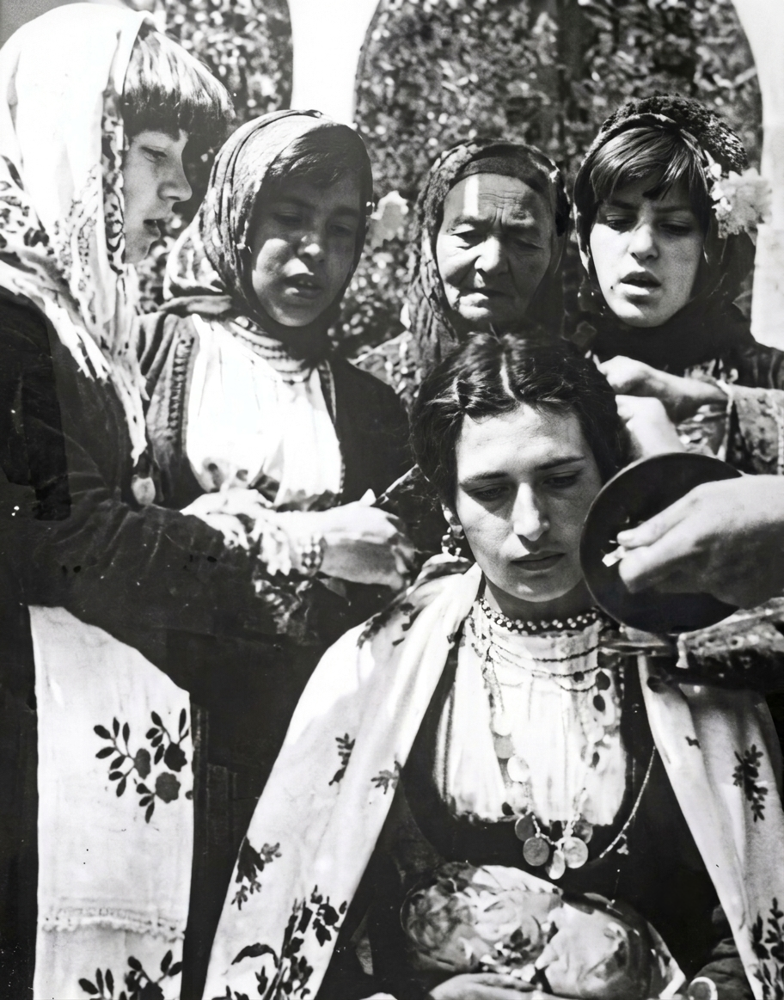

Дудулева мајка крај море седи
Вај, дудуле, дај Боже дожд
Крај море седи, Бога си моли
Вај, дудуле, дај Боже дожд
Да си зароси таја ситна роса
Вај, дудуле, дај Боже дожд
Да си навади по полето
Вај, дудуле, дај Боже дожд
Ај по полето бериќето
Вај, дудуле, дај Боже дожд